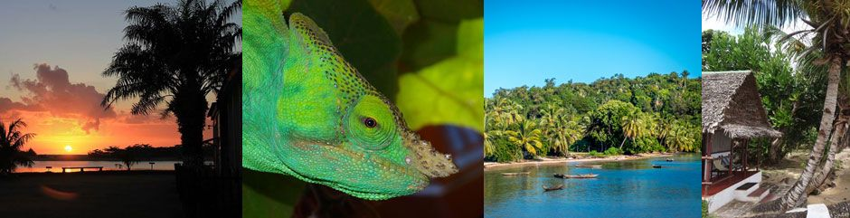

Sie planen Ihre Hochzeitsreise und möchten neben Strand und Palmen auch Naturerlebnisse, Kultur und Abenteuer-Feeling?
Dann ist Madagaskar das ideale Ziel für Ihre Flitterwochen.

Wir organisieren Ihre Hochzeitsreise in Madagaskar nach Ihren Wünschen und Vorlieben, und beraten Sie ausführlich zu möglichen Routen und Möglichkeiten vor Ort. Damit Ihre besondere Reise zu einem einmaligen, positiven und unvergesslichen Erlebnis wird. Wir betreuen seit vielen Jahren immer wieder Hochzeitsreisen und haben jeweils ein gutes Echo für unsere Beratung und die Reisen.
Madagaskar ist als Reiseland sehr interessant und hat immer mal wieder ein Element Abenteuer beigemischt.
Madagaskar auf eigene Faust zu bereisen ist natürlich machbar. Wir würden dies allerdings nicht während einer Hochzeitsreise machen. Denn selbst organisierte Reisen brauchen Zeit und Geduld und sehr viel Flexibilität.
Bitte beachten Sie, dass Madagaskar sehr gross ist und die Verkehrswege ganz unterschiedliche Qualität haben. Oft ist es gar nicht möglich, von einer Zone zur anderen zu gelangen. Daher ist Madagaskar nicht eigentlich nur eine grosse Insel, sondern eine Anhäufung von kleinen Inselregionen. Während einer Reise durch Madagaskar ist das Vorankommen von A nach B das viel grössere Problem als die Frage nach Unterkunft und Essen. Dies gilt es bei der Route zu berücksichtigen. Mit uns reisen Sie ohne Stress und ohne zu viele Orte in zu wenig Zeit.
Inselfeeling, Nationalparks, Wanderungen? Madagaskar bietet alles.
Wir finden die ideale Tour für Ihre Vorstellungen, und wir planen direkt vor Ort. So reisen Sie entspannt und haben Zeit für sich. Bei Wunsch organisieren wir auch ganz individuelle Programmwüsche zur Hochzeit. Gleichzeitig haben Sie mit unserem Team in Tana immer einen direkten – deutschsprachigen – Kontakt vor Ort.
Zu guter Letzt raten wir Ihnen ganz plump und ehrlich gesagt von der oftmals angepriesenen madagassischen Trauminsel Nosy Be ab. Es gibt weit schönere Orte in Madagaskar und auf der Welt als Nosy Be, um seine Flitterwochen zu verbringen.